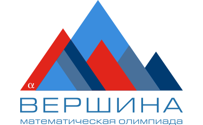

Нет данных для расчёта
Лицей №3 · Мониторинг регистрации
Каждый класс —
ближе к вершине.
Регистрация на математическую олимпиаду.
Два корпуса, одна команда.

учеников готовы к олимпиаде
Данные по классам ещё не заполнены
Режим редактораИзменения сохраняются общей кнопкой.
→ Результаты регистрации
70% и выше55% — менее 70%менее 55%нет данныхЗарегистрировано / всего учеников × 100